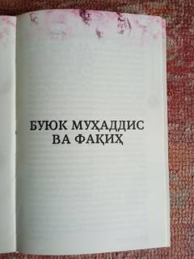

DTBuyuk muhaddis va faqih Abdulloh ibn Muborakning hayoti va ilmiy merosiga bag'ishlangan risola.
Ushbu kitob Islom olmining buyuk muhaddisi, faqih va tasavvuf namoyandasi Abdulloh ibn Muborakning hayoti, ilmiy merosi va fazilatlari haqida hikoya qiladi. Asarda uning tug'ilish tarixi, oilasi, taqvodorligi va qoldirgan boy ilmiy merosi haqida qimmatli ma'lumotlar berilgan.